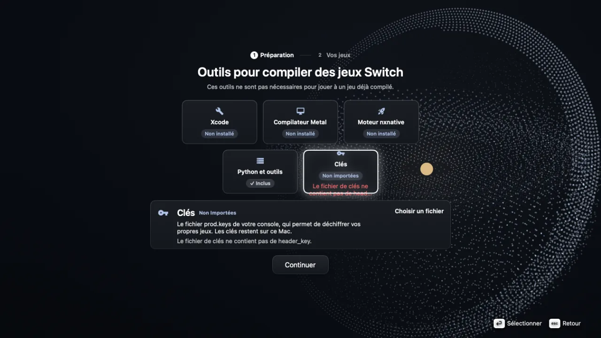
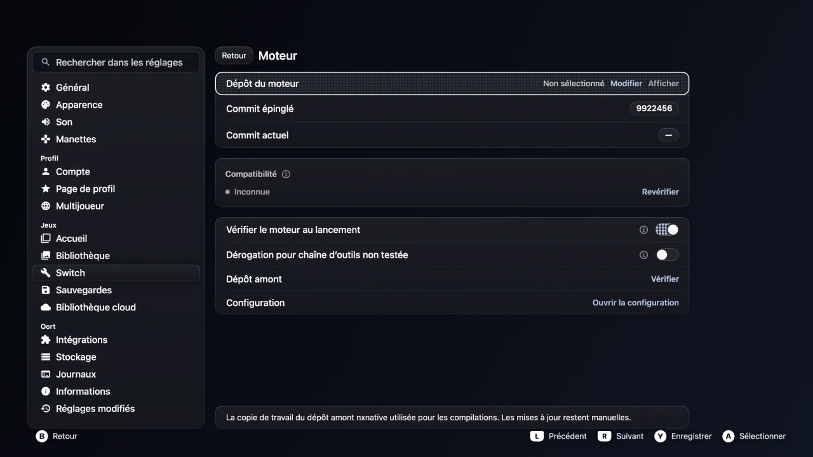
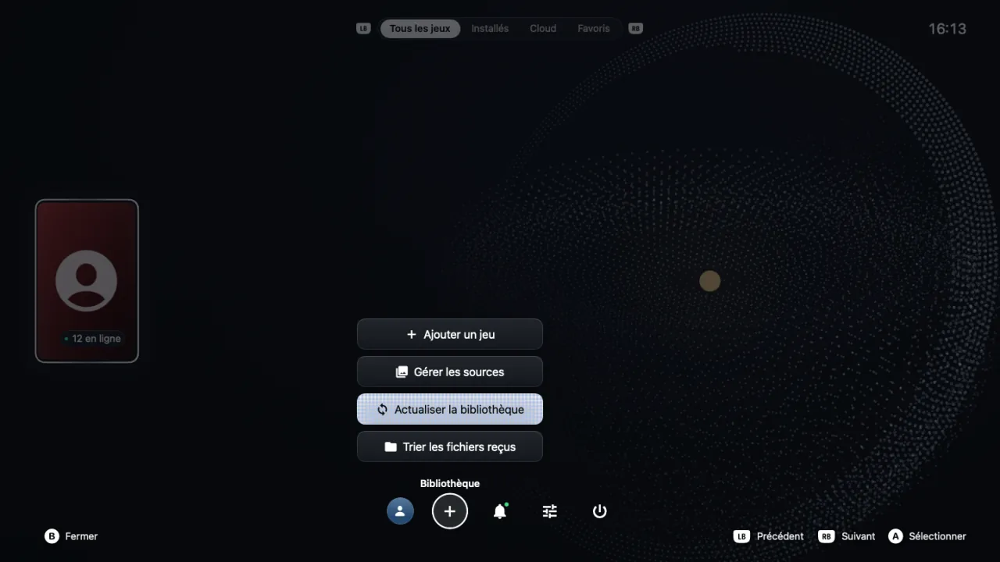
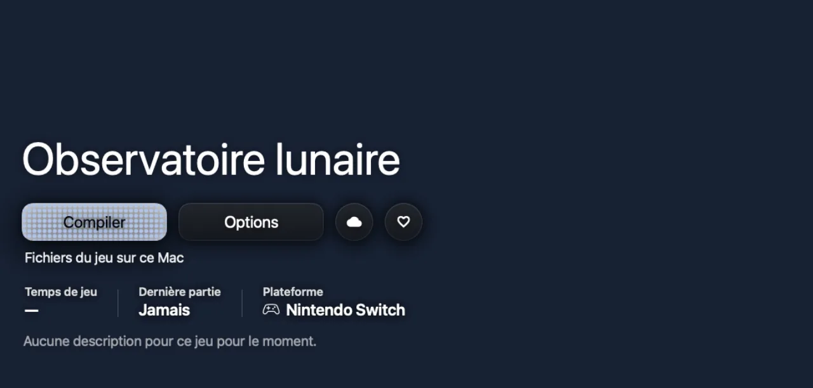

Ajouter un jeu Switch à compiler
Ce guide décrit la 0.5.0-beta.3. La 0.5.0-beta.4 est sortie depuis. Ce qui change
- 1
Ce qu’il te faut
Tes propres fichiers de jeu, ton
prod.keys, et le droit de t’en servir. Oort ne fournit ni jeu, ni clé, ni firmware. Compiler demande aussi Xcode 27.2 ou plus récent, le compilateur Metal attendu et macOS 26.6.Lu dans le code, pas essayé : D’où ça vient

- 2
Prépare les outils
Réglages › Switch › Moteur › Ouvrir la configuration montre ce qui manque. Chaque installation demande ton accord et montre sa destination.
Lu dans le code, pas essayé : D’où ça vient

- 3
Choisis les fichiers
Ajouter un jeu, ou ⌘N, puis tes fichiers NSP, XCI, NSZ, XCZ ou NUP. Ils restent à leur place.
Lu dans le code, pas essayé : D’où ça vient

- 4
Vérifie
Regarde le jeu, la mise à jour, les DLC, la destination et la place. Ajouter uniquement à la bibliothèque garde le jeu pour plus tard.
Lu dans le code, pas essayé : D’où ça vient
Capture à venir
L’étape « Vérification » avec un jeu inventé.
- 5
Compile
Ajouter et compiler lance le moteur ; tu peux fermer l’écran, il continue. Le temps dépend du jeu et du Mac. Aucun vrai jeu n’a été compilé avec cette version.
Lu dans le code, pas essayé : D’où ça vient



Ce qui a été essayé
Vérifié par des contrôles automatiques avec des jeux inventés. Ni vrai jeu lancé, ni vrai transfert Drive, ni vraie manette avec cette version.